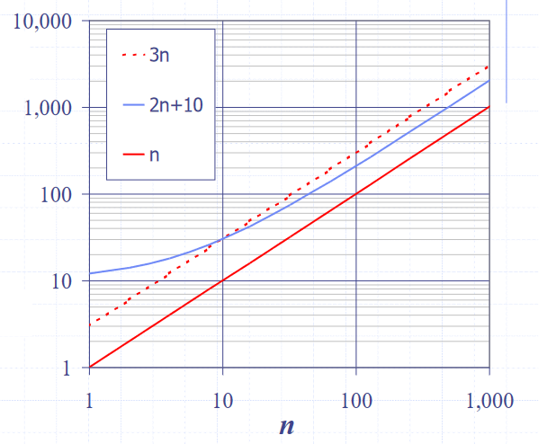

Running time
- To assess how good an algorithm is, we often use the metric of running time compared with the size of the input to the algorithm
- There are three types of running times which can be assessed:
- Worst case - which we focus on here, since it is both easy to analyse and useful
- Average case - which is often more difficult to assess
- Best case - often not sufficiently representative of the algorithm
- We can try to assess the running times in two ways:
- Experimental trials
- Writing a program implementing the algorithm, then running for inputs of different sizes. We can then fit curves to a plot of the results to try to classify the algorithm
- This has various drawbacks, including:
- Need to implement the algorithm, which might be difficult, or the reason for the analysis is to decide which one to implement
- Not all inputs can be covered, so not necessarily representative
- Dependent on machine hardware and software environments, so difficult to equate between different tests, since same specs are needed
- Theoretical analysis
- Given a high-level description of the algorithm (not a full implementation), expresses the running time as a function of the input size \(n\)
- Pseudocode is used for this high-level description, which lies between English prose and program code. It has no formal syntax, and allows omission of some aspects of the implementation to make analysis easier
- This has the benefits of:
- Allowing all possible inputs to be covered
- Being independent of machine hardware and software environments, so easier to equate between different tests
- Given a high-level description of the algorithm (not a full implementation), expresses the running time as a function of the input size \(n\)
- Experimental trials
Random Access Machine (RAM) model
- To analyse programs, we use a simplified model of how computers work to help think about the time an high level operation takes to run by expressing it as fundamental operations which are equivocal to real computers
- In the RAM model, we consider a computer with:
- A single CPU executing a single program
- An arbitrarily large indexable array of memory
- A set of registers memory can be copied into
- Basic arithmetic and memory allocation operations
- Generally, we tend to abstract beyond this model to just consider a set of “primitive operations” which take constant time irrespective of input size in the RAM model
- Generally single lines of pseudocode, but not always
- We can then analyse performance by counting the number of operations needed, as their number is proportional to running time
- We can then express the running time of the program as being between the best and worst cases of number of operations needed, multiplied their running time
- Let \(T(n)\) denote the running time, $b(n)$ the best case number of operations, \(w(n)\) the worst case, and \(t\) the time taken for one primitive operation
- Then, the running time is bounded as \(t \cdot b(n) \leq T(n) \leq t \cdot w(n)\)
- This metric of running time \(T(n)\) is not dependent on machine hardware or software environment, instead is an intrinsic property of the algorithm
Common functions of running time
- Good
- Constant, \(1\)
- Logarithmic, \(log\ n\)
- Linear, \(n\)
- N-log-N, \(n \cdot log\ n\)
- Bad
- Quadratic, \(n^2\)
- Cubic, \(n^3\)
- Polynomial, \(\sum_i (a_i \cdot x^i)\)
- Exponential, \(a^n, \exists a>1\)
Big-O notation
-
Formal definition
Given functions \(f(n)\) and \(g(n)\), we say that \(f(n)\) is \(O(g(n))\) if:
There exist positive constants \(c\) and \(n_0\) such that \(f(n) \leq c \cdot g(n)\) for \(n \geq n_0\)
-
Informally, this means that means that \(f(n)\) will be “overtaken” by $g(n)$ for all values above some threshold \(n_0\), allowing scaling by a linear factor \(c\)
- ”\(f(n)\) is \(O(g(n))\) if \(g(n)\) grows as fast or faster than \(f(n)\) in the limit of \(n \rightarrow \infty\)” source
-
Examples (Data Structures and Algorithms in Java, Goodrich, Tamassia, Goldwasser)
-
Consider the function \(2n+10\), to show that it is \(O(n)\), we take:
$2n+10 \leq c \cdot n$
\((c-2) \cdot n \geq 10\)
\(n \geq 10/(c-2)\)
Hence, picking \(c=3\) and \(n_0 = 10\), so the condition is satisfied

-
-
To prove something is not \(O(n)\), we show that there is no \(c\) for any arbitrarily large \(n_0\) which satisfies the condition
-
Big-O notation gives an upper bound on the growth rate of a function as its input size \(n\) tends to infinity
- Hence, \(f(n)\) is \(O(g(n))\) means that the growth rate of \(f(n)\) is no greater than that of the growth rate of \(g(n)\)
-
Informally, the Big-O of a function is the term within a function which grows fastest
- This is because that term will come to “dominate” for very large \(n\), and we then just pick \(n_0\) where that term is dominating, and use \(c\) to shift the function to fit
-
This gives rise to some rules to quickly evaluate the Big-O without going through the mathematical procedure
- If \(f(n)\) is a polynomial of degree \(d\), then \(f(n)\) is \(O(n^d)\)
- This comes from dropping all but the fastest growing term, as it comes to dominate for large \(n\)
- If \(f(n)\) is a polynomial of degree \(d\), then \(f(n)\) is \(O(n^d)\)
-
When writing Big-O, we:
- Try to use the smallest possible class of functions which fulfills the criteria, e.g. \(O(n)\) not \(O(n^2)\), whilst both technically are Big-O of linear functions
- Use the simplest expression of the class, e.g. \(O(n)\), not \(O(5n)\)
- Asymptotic algorithm analysis is a way we can take pseudocode and use it to find the Big-O of an algorithm
- We first consider the worst-case number of primitive operations that the algorithm could require to run as a function of its input size
- We then express this derived function in Big-O notation
- There are other “relatives” of Big-O notation
- Big-O gives the upper bound
- \(f(n) \leq g(n)\) in the limit of \(n \rightarrow \infty\)
- Big-Omega gives the lower bound
- \(f(n) \geq g(n)\) in the limit of \(n \rightarrow \infty\)
- Big-Theta gives “asymptotically tight” \(\approx\) average
- \(f(n) = g(n)\) in the limit of \(n \rightarrow \infty\)
- Big-O gives the upper bound